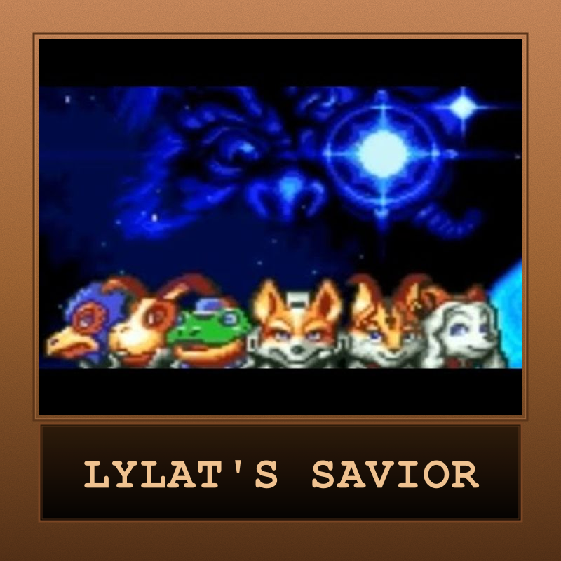
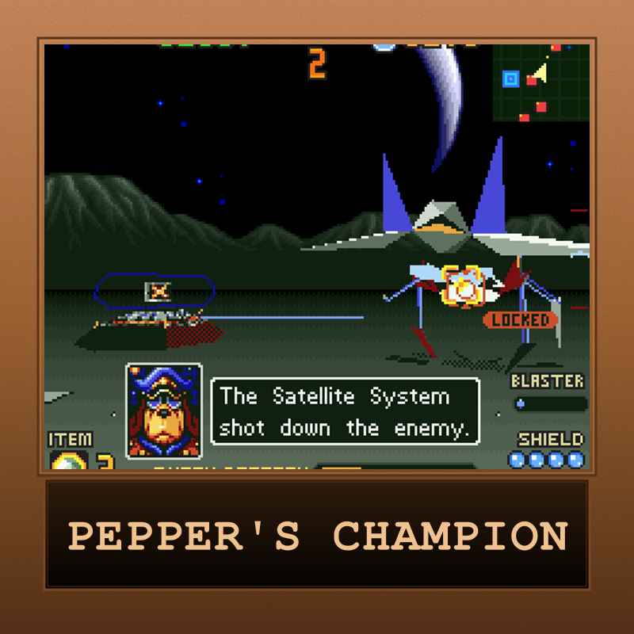
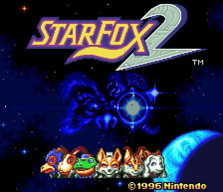
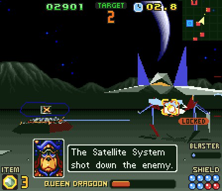
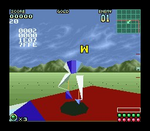
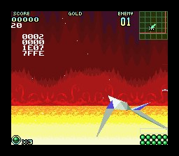

Star Fox 2
The lost SNES sequel that almost was — completed in 1995, shelved for 22 years, and finally unleashed on the Super NES Classic Edition in 2017. A semi-real-time space combat sim where you dogfight across the Lylat system, transform Arwings into bipedal walkers, and defend Corneria from Andross's relentless assault. Picked to mark Star Fox's return on Nintendo Switch 2 — Retro Game Club's bonus celebration runs alongside the regular monthly pick through end of June.

| Platform | Super Nintendo Entertainment System |
|---|---|
| Genre | Rail Shooter with Real-Time Strategy elements |
| Released | (originally completed 1995, shelved) |
| Director | Katsuya Eguchi |
| Producer | Shigeru Miyamoto |
| Developer | Nintendo EAD & Argonaut Software |
| Publisher | Nintendo |
| Available | SNES Classic Edition, Nintendo Switch Online |
Where to Play
About This Game
Star Fox 2 is one of gaming's great rescued artifacts. Developed by Nintendo EAD and Argonaut Software through 1995–96 as a direct sequel to the original Star Fox, the game was fully completed and ready to ship before Nintendo abruptly pulled the plug — partly because the upcoming Nintendo 64 was already on the horizon and partly because Miyamoto wanted to rethink the team's direction. Twenty-two years later, Nintendo dusted the ROM off, polished it, and released it for the very first time on the Super NES Classic Edition in September 2017.
The game is a sharp departure from its predecessor. Instead of linear, on-rails missions, players pilot two Arwings simultaneously across a free-roaming map of the Lylat system, choosing which incoming threats to intercept while defending planet Corneria from missile barrages. When you engage an enemy, the game drops into 3D combat similar to Star Fox 1 — but now your Arwing can transform mid-fight into a bipedal Walker for ground-level skirmishes, a mechanic that wouldn't return to the franchise until Star Fox Zero in 2016. Add in two new playable pilots (Miyu the lynx and Fay the dog), procedural mission ordering, and three difficulty levels with branching routes, and you have a game that feels closer to a roguelike-flavored action-strategy hybrid than anything else on the SNES.
Did You Know?
- 22 years on the shelf — Star Fox 2 was finished in early 1996 and even had review copies printed before Nintendo cancelled the release. The game's first official launch came in September 2017 — making it one of the longest-delayed officially released games in history.
- Argonaut + Nintendo, the Super FX team — Lead programmer Dylan Cuthbert (Argonaut) had also led the original Star Fox. SF2 pushes the Super FX2 chip harder than almost any other SNES game, hitting framerates and polygon counts that were practically unthinkable on the platform.
- The Walker that waited two decades — The Arwing's mid-combat transformation into a walking mech was first designed for SF2 in 1995. The mechanic finally returned in Star Fox Zero on Wii U in 2016 — over twenty years later.
- SF64 borrowed liberally — Many of SF2's ideas — the all-range mode, multiple difficulty paths, alternate routes through the Lylat system — were folded directly into Star Fox 64, which is why fans sometimes call SF64 "the SF2 we ended up with."
- Why this is a bonus pick — Nintendo announced Star Fox for Nintendo Switch 2 this month, ending a long quiet stretch for the franchise. We're playing through SF2 — the lost sequel — alongside our regular monthly game to mark the occasion.
Critical Reception
Reviewed in 2017 alongside the SNES Classic launch — most coverage frames it as both a 1995 artifact and a fresh release.
Club Achievements

Lylat's Savior
Bronze
Fox's Wingman
Bronze
Pepper's Champion
BronzeOther Participants
No other participants yet.
Speedrun Records
Star Fox 2's branching routes and three difficulty tiers make for a lively speedrun scene — a clean Hard% on the SNES Classic version typically lands inside 30 minutes.
Soundtrack
Composed by Kozue Ishikawa and Yumiko Kanki
SF2's score leans further into orchestral sci-fi than the original — driving leitmotifs for each pilot, tense bridge themes during the strategic map screens, and pounding action cues that ramp up as Corneria's missile threat escalates. The sound design squeezes every last drop out of the SPC700 chip, and several themes were quietly reused or remixed into Star Fox 64.
Notable Tracks
- Title Theme
- Lylat Map Screen
- Corneria Defense
- Andross's Throne
- Walker Mode
- Ending Theme
Screenshots




Screenshots via SNES Central and LaunchBox Games Database
Sources & Attribution
- Game info, history, and credits adapted from Wikipedia
- Development background from Arwingpedia and The Cutting Room Floor
- Box art and assets via LaunchBox Games Database
- Screenshots from SNES Central
- Speedrun data from Speedrun.com
- Soundtrack via KHInsider